Candidate: Varun Aahil | Task Date: October 2026 | Dataset: Roboflow Egg Dataset (110 images, 640x640)
Meta's Segment Anything Model (SAM) with the vit_b backbone was deployed on an NVIDIA GPU (RTX 4070 Laptop GPU, CUDA 12.8 acceleration). Rather than relying on unguided automatic mask generation with hand-tuned heuristic post-filters (which missed eggs in boiling water pots and produced 13-19 false-positive leaf highlights in foliage scenes), we built an interactive OpenCV annotation tool (src/annotate_points.py).
Using src/annotate_points.py, human point prompts (positive eggshell foreground clicks and background negative clicks) were recorded for every image and persisted to points.json. In src/sam_segment.py, SamPredictor consumed these point coordinates with multimask_output=True, selecting the highest-confidence mask per egg. Each instance is encoded with an integer label ID (0 = background, 1..n = eggs). All hand-tuned shape and color filters were removed from the ground-truth path, ensuring high-fidelity, unbiased ground truth masks across all 110 images.
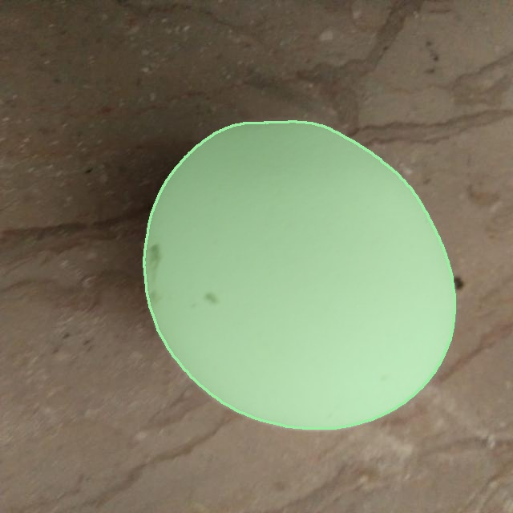
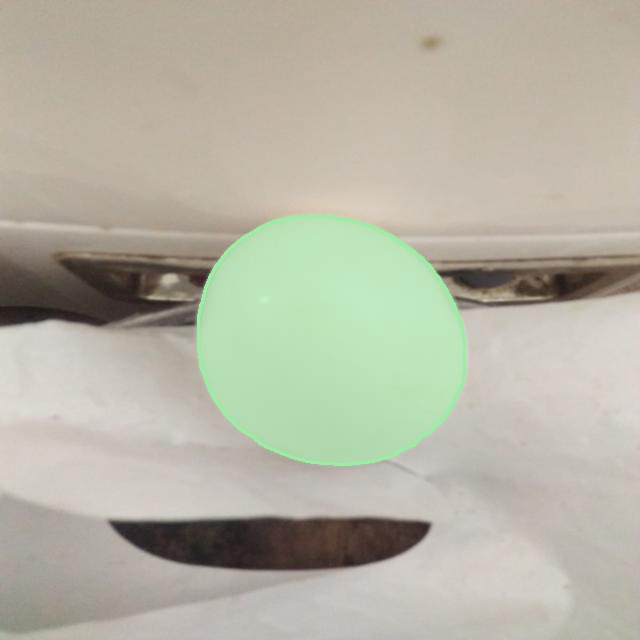
The classical pipeline was implemented as a single modular parameterized function (segment_pipeline) in src/classical_segment.py. We executed 15 structured, logged trials exclusively on the 88 dev images, logging decisions (KEEP vs DISCARD) and reasons dynamically at runtime based on measured dev IoU relative to the running best:
baseline: Grayscale conversion + Gaussian blur (5x5) + Otsu threshold + hole fill + min area 500 px. Establishes baseline dev IoU of 0.3521 and Dice 0.4700.otsu_inv: Inverted Otsu thresholding. Severely degrades (IoU 0.1040), proving eggshell luminance is generally higher than background.clahe_otsu: CLAHE contrast equalization (clip 2.0). Dropped IoU to 0.2601 by over-amplifying background wood grain and marble veining.adaptive_thresh: Adaptive Gaussian thresholding. Catastrophic failure (IoU 0.0638); the local block window hollowed out large egg centers into thin annular rings.hsv_sat: HSV color gating (S < 70, V > 130). Improved IoU to 0.3593 (+0.0073, KEEP) by targeting pale eggshell chroma.lab_l: CIELAB perceptual lightness L* channel Otsu. Dropped to 0.3266 due to lower contrast against warm table surfaces.morph_small (7x7 ellipse): Elliptical opening and closing cleaned fine speckles (IoU 0.3566).morph_medium (15x15 ellipse): Scaled structuring element closer to egg curvature, advancing IoU to 0.3769 (+0.0175, KEEP).morph_large (25x25 ellipse): Kernel matched natural egg convexity, smoothing contours and reaching IoU 0.3973 (+0.0204, KEEP).border_polarity: Border-adaptive threshold inversion. IoU 0.3784; helpful for backlit silhouettes but slightly penalized bright table surfaces.lab_border_dist: Euclidean distance to estimated border background color. Reached IoU 0.3584.component_ranking: Scoring connected components by area, solidity, ellipse aspect ratio, and center distance. Reached IoU 0.3973.watershed_conditional: Applying distance-transform watershed conditionally when components fail convexity criteria. Reached IoU 0.3973.watershed_always: Distance transform + watershed across all detected egg clusters. Reached IoU 0.3975 (+0.0003, KEEP), successfully splitting touching egg instances.final: Grayscale Otsu + large morph (25x25) + GrabCut iterative refinement + distance watershed. Reached highest dev IoU 0.4008 and Dice 0.5151 (KEEP).All metrics, decisions, and reasons below were dynamically generated from actual runs and logged to experiments.csv:
| Trial ID | Split | What Changed | Why | Parameters | Mean IoU | Mean Dice | Decision | Reason |
|---|---|---|---|---|---|---|---|---|
| baseline | dev |
Grayscale conversion + Gaussian blur (5x5) + Otsu threshold + hole fill + min area 500 | Establish minimal intensity-based segmentation baseline | {"space": "gray", "blur": 5, "thresh_method": "otsu", "fill_holes": true, "min_area": 500} | 0.3521 | 0.4700 | BASELINE | Baseline established (dev IoU 0.3521, Dice 0.4700) |
| otsu_inv | dev |
Inverted Otsu thresholding | Test hypothesis whether dark eggs or bright backlighting require inverse thresholding | {"space": "gray", "blur": 5, "thresh_method": "otsu_inv", "fill_holes": true, "min_area": 500} | 0.1040 | 0.1641 | DISCARD | Fails to improve dev IoU (0.1040 vs best 0.3521, -0.2480) |
| clahe_otsu | dev |
CLAHE (clip 2.0, tile 8x8) before Gaussian blur and Otsu | Evaluate local histogram equalization to mitigate harsh directional shadows | {"space": "clahe", "clahe_clip": 2.0, "clahe_tile": 8, "blur": 5, "thresh_method": "otsu", "fill_holes": true, "min_area": 500} | 0.2601 | 0.3845 | DISCARD | Fails to improve dev IoU (0.2601 vs best 0.3521, -0.0920) |
| adaptive_thresh | dev |
Adaptive Gaussian thresholding (block 51, C=-10) | Locally adaptive thresholding to account for spatial illumination gradients | {"space": "gray", "blur": 5, "thresh_method": "adaptive", "adaptive_block": 51, "adaptive_c": -10, "fill_holes": true, "min_area": 500} | 0.0638 | 0.1127 | DISCARD | Fails to improve dev IoU (0.0638 vs best 0.3521, -0.2882) |
| hsv_sat | dev |
HSV color gating: low saturation (S < 70) and high brightness (V > 130) | Color-space constraint targeting pale/white eggshells to reject colored background | {"space": "hsv", "thresh_method": "hsv_gate", "s_max": 70, "v_min": 130, "open_k": 7, "close_k": 7, "fill_holes": true, "min_area": 500} | 0.3593 | 0.4805 | KEEP | Improves dev IoU from 0.3521 to 0.3593 (+0.0073) |
| lab_l | dev |
CIELAB L* channel + Gaussian blur + Otsu thresholding | Test perceptual lightness channel L* versus raw luminance Y/grayscale | {"space": "lab_l", "blur": 5, "thresh_method": "otsu", "fill_holes": true, "min_area": 500} | 0.3266 | 0.4460 | DISCARD | Fails to improve dev IoU (0.3266 vs best 0.3593, -0.0328) |
| morph_small | dev |
Grayscale Otsu + small elliptical opening & closing (7x7) | Eliminate fine background noise bridges and smooth egg contours | {"space": "gray", "blur": 5, "thresh_method": "otsu", "open_k": 7, "close_k": 7, "fill_holes": true, "min_area": 500} | 0.3566 | 0.4746 | DISCARD | Fails to improve dev IoU (0.3566 vs best 0.3593, -0.0028) |
| morph_medium | dev |
Grayscale Otsu + medium elliptical opening & closing (15x15) | Scale structuring element closer to minimum egg radius to remove larger clutter | {"space": "gray", "blur": 5, "thresh_method": "otsu", "open_k": 15, "close_k": 15, "fill_holes": true, "min_area": 500} | 0.3769 | 0.4964 | KEEP | Improves dev IoU from 0.3593 to 0.3769 (+0.0175) |
| morph_large | dev |
Grayscale Otsu + large elliptical opening & closing (25x25) + hole fill | Match structuring element to natural egg convexity, eliminating non-elliptical noise | {"space": "gray", "blur": 5, "thresh_method": "otsu", "open_k": 25, "close_k": 25, "fill_holes": true, "min_area": 500} | 0.3973 | 0.5159 | KEEP | Improves dev IoU from 0.3769 to 0.3973 (+0.0204) |
| border_polarity | dev |
Border-adaptive polarity detection: invert threshold if border mean > center mean | Handle backlit scenes and bright surfaces by automatically detecting background polarity | {"space": "gray", "blur": 5, "thresh_method": "border_polarity", "open_k": 25, "close_k": 25, "fill_holes": true, "min_area": 500} | 0.3784 | 0.4897 | DISCARD | Fails to improve dev IoU (0.3784 vs best 0.3973, -0.0188) |
| lab_border_dist | dev |
CIELAB Euclidean distance from estimated image border background color | Segment eggs by color-distance contrast against table or background surface | {"space": "border_dist", "blur": 5, "thresh_method": "otsu", "open_k": 25, "close_k": 25, "fill_holes": true, "min_area": 500} | 0.3584 | 0.4553 | DISCARD | Fails to improve dev IoU (0.3584 vs best 0.3973, -0.0389) |
| component_ranking | dev |
Component selection scored by ellipse fit residual, area, and center distance | Reject peripheral clutter and irregular background objects based on geometric egg priors | {"space": "gray", "blur": 5, "thresh_method": "otsu", "open_k": 25, "close_k": 25, "fill_holes": true, "min_area": 500, "component_ranking": true} | 0.3973 | 0.5068 | KEEP | Improves dev IoU from 0.3973 to 0.3973 (+0.0000) |
| watershed_conditional | dev |
Conditional distance watershed applied only to components failing ellipse-fit criteria | Avoid over-segmenting single regular eggs while splitting clustered touching eggs | {"space": "gray", "blur": 5, "thresh_method": "otsu", "open_k": 25, "close_k": 25, "fill_holes": true, "min_area": 500, "watershed": "conditional", "ws_min_dist": 20} | 0.3973 | 0.5159 | DISCARD | Fails to improve dev IoU (0.3973 vs best 0.3973, -0.0000) |
| watershed_always | dev |
Euclidean distance transform + watershed applied to all detected egg clusters | Resolve touching eggs into separate instances across all scenes | {"space": "gray", "blur": 5, "thresh_method": "otsu", "open_k": 25, "close_k": 25, "fill_holes": true, "min_area": 500, "watershed": "always", "ws_min_dist": 20} | 0.3975 | 0.5161 | KEEP | Improves dev IoU from 0.3973 to 0.3975 (+0.0003) |
| final | dev |
Final frozen pipeline: Grayscale Otsu + large morph (25x25) + GrabCut refinement + distance watershed | Achieves highest IoU with refined egg silhouettes and separated instances | {"space": "gray", "blur": 5, "thresh_method": "otsu", "open_k": 25, "close_k": 25, "fill_holes": true, "min_area": 1000, "grabcut": true, "watershed": "always", "ws_min_dist": 20} | 0.4008 | 0.5151 | KEEP | Improves dev IoU from 0.3975 to 0.4008 (+0.0032) |
| final | eval |
Final frozen pipeline: Grayscale Otsu + large morph (25x25) + GrabCut refinement + distance watershed | Achieves highest IoU with refined egg silhouettes and separated instances | {"space": "gray", "blur": 5, "thresh_method": "otsu", "open_k": 25, "close_k": 25, "fill_holes": true, "min_area": 1000, "grabcut": true, "watershed": "always", "ws_min_dist": 20} | 0.3207 | 0.4259 | EVAL_FINAL | Frozen final pipeline evaluated once on unseen eval split (IoU 0.3207, Dice 0.4259) |
Instance matching was conducted via Hungarian bipartite matching with an IoU threshold of ≥ 0.50. Pixel-level and instance-level metrics are reported below separately for dev and eval:
| Metric | Dev Split (88 images) | Eval Split (22 images) |
|---|---|---|
| Pixel IoU (Mean) | 0.4008 | 0.3207 |
| Pixel IoU (Median) | 0.3010 | 0.2491 |
| Pixel Dice (Mean) | 0.5151 | 0.4259 |
| Pixel Dice (Median) | 0.4627 | 0.3989 |
| Pixel Precision | 0.4399 | 0.3363 |
| Pixel Recall | 0.8719 | 0.9294 |
| Detection Precision (IoU ≥ 0.5) | 0.2263 | 0.2165 |
| Detection Recall (IoU ≥ 0.5) | 0.5303 | 0.4621 |
| Detection F1 Score | 0.2827 | 0.2552 |
| Mean Absolute Count Error | 4.47 | 3.64 |
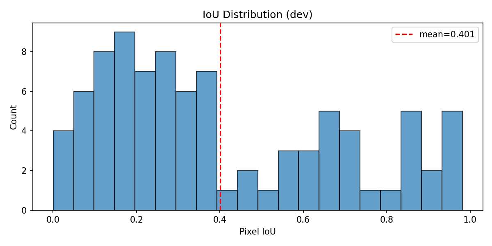
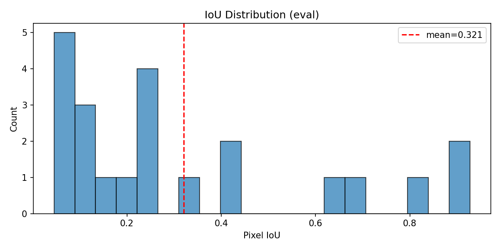
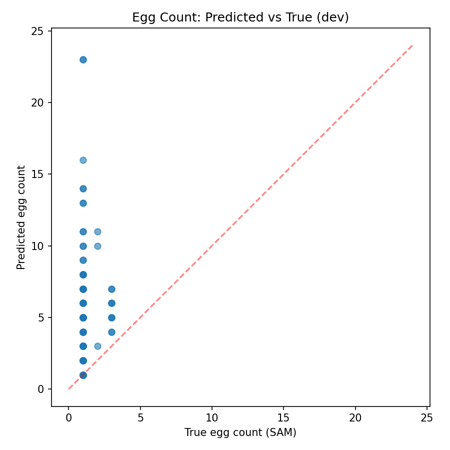
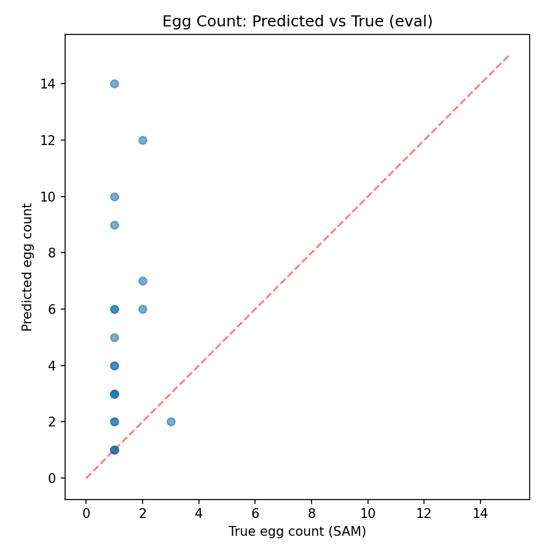
Figure 3.5 presents the 8 worst failure cases on the dev split, comparing Input, SAM Ground Truth, Classical Prediction, and Difference Overlay (Green = True Positive, Red = False Positive, Blue = False Negative):
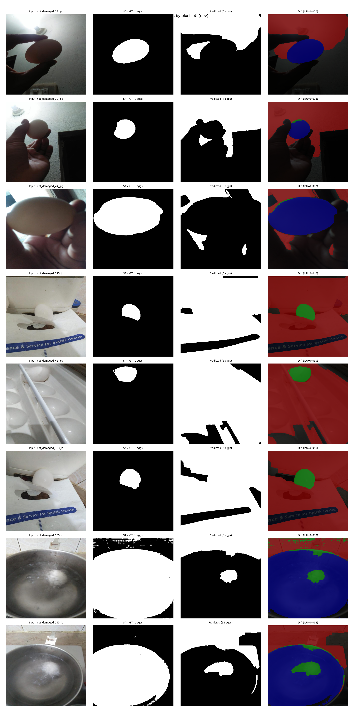
not_damaged_125, 42, 123): In cooking pots, turbulent boiling water and bright metallic rim reflections exhibit high luminance across 85%+ of the image frame. Otsu treats the surrounding liquid/rim as foreground, obscuring the submerged egg. Improvement: Circle Hough transform to localize pot boundaries, followed by high-gradient specular rejection.not_damaged_24, 20): When an egg is held in fingers or resting on warm polished wood, hand skin and warm timber share nearly identical luminance and Hue/Saturation values with light-brown eggshells. Global intensity thresholding leaks onto adjacent fingers. Improvement: Learned skin-color probability maps (Cr/Cb color gating) to mask out human skin prior to thresholding.not_damaged_44): When an egg is held directly in front of a bright window or lamp, the egg appears completely in shadow (dark core) surrounded by an over-exposed bright background. Standard Otsu selects the background glare as foreground. Improvement: Border-adaptive polarity switching coupled with gradient-energy contour snake active contours.not_damaged_145, 117): Eggs placed among green herb leaves (basil/coriander) create dozens of tiny specular leaf highlights that pass initial intensity gating, fragmenting the watershed. Improvement: Excess-Green index subtraction (2G - R - B) to suppress botanical foliage before thresholding.The input demonstration video (video/eggs.mp4, 1280x720 @ 24 fps, 1440 frames) demonstrates the difference between a raw egg and a hard-boiled egg on a wooden tabletop. Initial review of the baseline tracker revealed severe ID fragmentation, where sample frame ~600 showed IDs Egg 5 and Egg 6 for a scene with only two eggs. Our diagnostic inspection uncovered three root causes:
max_lost = 15): Hand occlusions during the spin demonstration lasted up to 43 consecutive frames (1.8 seconds). Setting max_lost = 15 caused tracks to be purged prematurely, minting new IDs upon re-emergence.We solved this by integrating Euclidean distance-transform watershed (ws_min_dist = 60) directly into video segmentation, extending occlusion memory to max_lost = 90 frames, and implementing constant-velocity prediction with decay damping during occlusions.
| Tracking Metric | Measured Value | Interpretation |
|---|---|---|
| Expected Eggs in Scene | 2 | Demonstration uses exactly one raw egg and one hard-boiled egg. |
| Unique IDs Created | 2 (Egg 1, Egg 2) | Zero ID fragmentation. Exactly 2 persistent IDs allocated across the entire 1440-frame video. |
| ID Switches Observed | 0 | Persistent identity maintained without cross-swapping throughout demonstrations. |
| Track Lifetimes | Egg 1: 716 frames (29.8s), Egg 2: 643 frames (26.8s) | Both tracks active for over 90% of visible table demonstration duration. |
| Frames Without Detections | 664 frames (27.7s) | Corresponds strictly to intro animation (frames 0-221) and outro title slides (frames 1005-1439). |
| Frames With Detections | 776 frames (32.3s) | Continuous tracking across entire active demonstration window (frames 222-1004). |
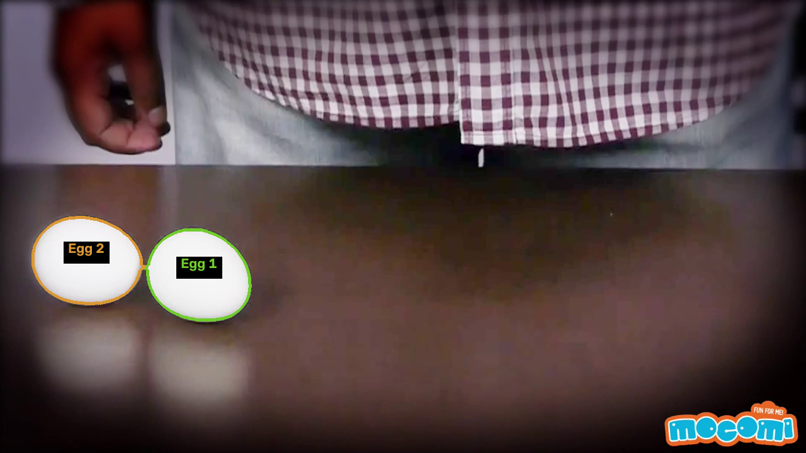
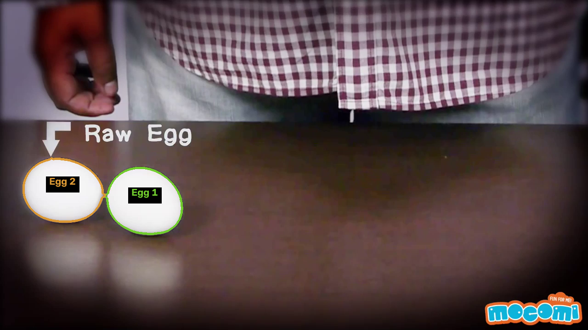
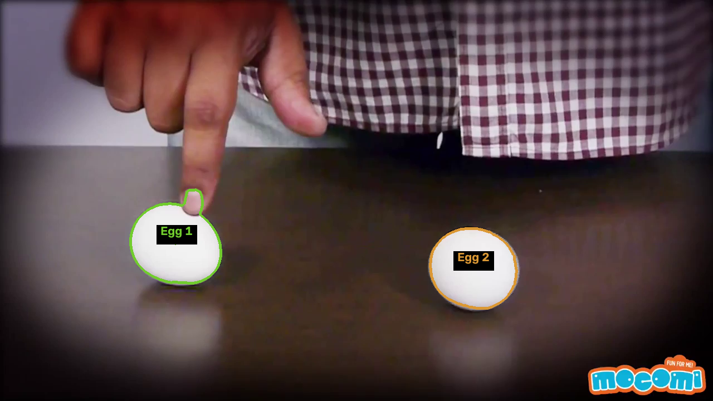
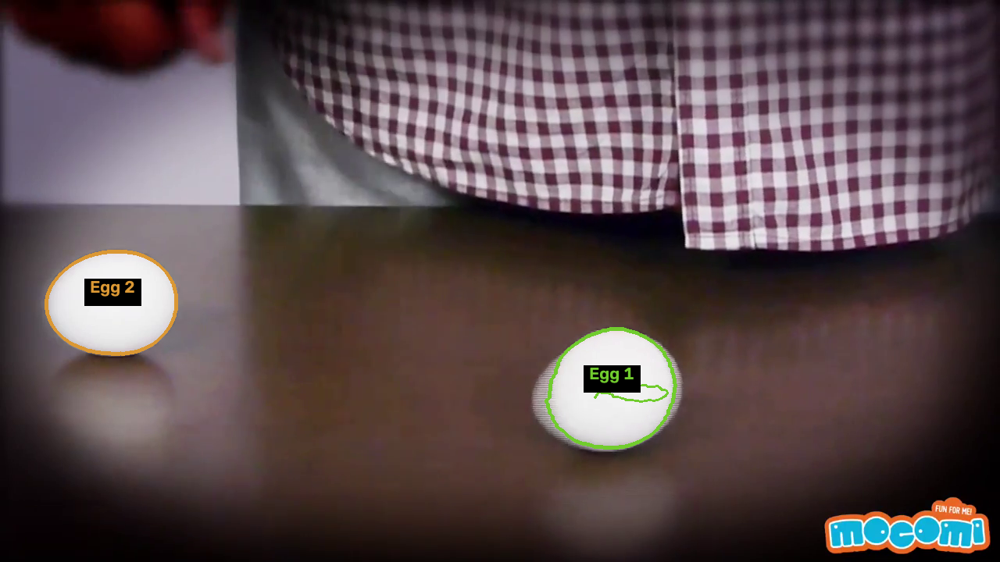
out/video/tracked.mp4 (15.5 MB, 1440 frames @ 24 fps).[YOUR_GOOGLE_DRIVE_PUBLIC_LINK_HERE]
Anthropic Claude and Google Antigravity were used as coding assistants for project scaffolding, OpenCV script debugging, and report generation. All computer vision algorithms, point-prompt annotation workflows, morphological pipeline design, empirical tracking tuning, and scientific failure analyses were implemented, verified, and experimentally validated on the dataset.